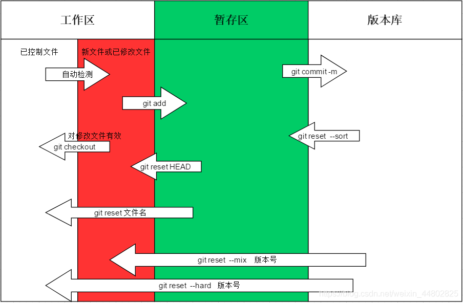

Notes of MIT-Missing-Semester
主讲：John、Anish、Jose（Massachusetts Institute of Technology）
课程笔记：https://missing-semester-cn.github.io
第一课：课程概览与 shell
为什么要用 shell
当你熟悉的可视化界面无法实现你想要的功能时，那么 shell 将成为你与计算机交互的主要方式之一。
可视化界面功能是十分局限的，因为你只能使用它所提供的的按钮、滑块、输入字段等功能。而这些文本工具通常是相互可组合的，可以使用许多不同的组合或编程方式进行自动化。这就是为什么，在本课程中，我们将专注于这些基于命令行或文本的工具，而Shell则是实现这些工作的主要工具之一。
命令（1）（commands）
命令通常是相对简单的东西，通常会像是使用参数执行程序之类的事情。如：
echo 程序：
baijiale@Bais-Mac ~ % echo hello
hello
- echo 可以打印出你给它的参数。
参数 就是命令后面以空格分隔的东西。
使用由多个单词组成的参数：
- 由 " 包围。
baijiale@Bais-Mac ~ % echo "hello world"
hello world
- 由 ' 包围
- 使用转义
baijiale@Bais-Mac ~ % echo hello\ world
hello world
面向终端的应用程序
- 这些应用程序存储在文件系统中
- 这些程序不是 shell 自带的，而是你的计算机自带的。而 shell 做的只是确定程序的位置并执行它
- shell 通过
环境变量来确定程序的位置
环境变量
环境变量是一种变量，就像编程语言中的变量一样。
环境变量是初次启动 shell 时需要设置的东西。例如你的主目录在哪里，你的用户名是什么。一个至关重要的变量即路径变量，就是 shell 搜索程序的路径。
echo $PATH
# 查看路径变量
如果我们想知道我们实际运行的是哪个程序，我们可以用 which 程序
which echo
/usr/bin/echo
# 如果我们输入 echo，那我们运行的就是这个目录下的程序
什么是 shell
shell，特别是 bash，真的是一种编程语言。shell 提示符后面不仅能运行带有参数的程序，还可以做类似 while 循环，条件语句等的事情。你甚至还可以在 shell 中定义函数，变量。
什么是路径
路径是描述计算机上文件位置的方式
- 绝对路径：绝对路径是能完全确定文件位置的路径，即文件的完整路径
- 相对路径：相对路径是相对于你当前所在的位置的路径
pwd 命令
要找出当前位置（工作目录），我们可以运行 pwd
baijiale@Bais-Mac ~ % pwd
/Users/baijiale
cd 命令
要更改工作目录，我们可以运行 cd（change directory）
baijiale@Bais-Mac ~ % cd /home
# 更改到 home 目录
cd 命令有一个参数-，它可以快速回到上一个工作目录
baijiale@Bais-Mac ~ % cd -
- ” . “表示当前目录
- “ .. ”表示父目录
ls 命令
还有一个非常有用的命令 ls，它可以查看当前目录中有哪些内容
baijiale@Bais-Mac ~ % ls
Library Pictures
ls 也可以使用路径作为参数，那么就是查看这个路径下的文件
- “~”代表主（家）目录（不是根目录），即
/home/bjl。也可以使用~来写相对路径
常用标志
-R 标志：递归地列出某个目录结构
程序的标志（flag）和选项（option）
大多数程序都会采用所谓的标志和选项，这些标志通常以-开头。
--help标志
这个标志对大多数程序都可用，它会打印出该命令的帮助信息。
现在，我们更建议使用man ls代替ls --help
zsh
usage: ls [-@ABCFGHILOPRSTUWabcdefghiklmnopqrstuvwxy1%,] [--color=when] [-D format] [file ...]
usage 中：[] 代表可选项，... 表示一个或多个文件（选项）
- + 字母
通常我们称单个破折号（-）加字母的组合为 标志（flag）。不带任何内容也是标志；带有值的东西叫做选项（option）。
例如：

- -a 和 --all 都是标志
- -C 和 --color 都是选项
ls 的 -l 标志
-l 标志被用来显示长列表格式

- 它可以给我们关于文件的更多信息，这非常常用
- 在某些条目开头的 d 表示这些条目是一个文件夹。
- 之后的字母表示为该文件设置的权限。阅读方法：三个字符为一组，第一组是文件所有者设置的权限；第二组是拥有该文件的组设置的权限；最后一组是其他人的权限列表。
文件/文件夹的权限
对于文件：
- 读（r），即可以读取它的内容
- 写（w），即可以修改它的内容并保存文件
- 执行（x，execute），即可以执行这个文件
对于文件夹：
- 读（r），是否可以看到这个目录中的文件
- 写（w），是否被允许在该目录中重命名、创建或删除文件
- 执行（x），执行权限就是所谓的搜索权限，这意味着你是否可以进入这个目录，即用 cd 进入这个目录从而写入/删除/读取文件
注意：
- 即使你对一个文件有写入权限，但你没有它所在目录的写入权限，你仍不能删除该文件
- 文件夹的读权限只是可以看到文件夹中有哪些文件，如果你想对文件夹的文件进行操作，你必须拥有这个文件夹的执行权限。
命令（2）
mv 命令
移动文件
mv [当前文件路径] [目标文件路径]
cp 命令
复制文件
cp [要复制文件路径] [目标文件路径]
rm 命令
删除文件
rm [文件路径]
注意：rm 默认情况下不能递归删除，所以不能用 rm 删除文件夹。
可以使用 -r 标志进行递归删除，然后给出要删除的路径，就可以删除这个路径下的所有文件。
rmdir 命令
只能删除空文件夹（空目录）
mkdir 命令
创建新目录（文件夹）
cat 命令
- 打印文件内容
- 将输入与输出连在一起
tail 命令
打印输入的最后 n 行
head 命令
打印输出的前n行
cat xxx.txt | head -n5
- 打印 xxx.txt 的前五行
man 命令
手册页
man [程序（命令）名称]
⌃L 快捷键可以快速清除终端
流（streams）
与文件交互，让文件在不同的程序之间传输。
标准输入流
一般输入流来自键盘，也就是你的终端
标准输出流
就是每当程序打印输出时，输出的内容就会传递到这个流中。默认情况下，输出流也是指向你的终端的。
标准错误流
用于在程序编写时输出错误信息，以避免污染标准输出。
流的重定向
改变程序的输入/输出指向。
方法：使用尖括号 < or >
<表示 将这个程序的 输入 重定向为这个文件的内容>表示 将前面程序的 输出 重定向到这个文件中。（即重定向标准输出流）>>表示 追加 而不是 覆盖2>用来重定向标准错误流
例如：
echo hello > hello.txt
- 这里使用的是相对路径，所以会在当前路径创建一个 hello.txt 的文件（如果当前路径没有这个文件）
baijiale@Bais-Mac ~ % cat < hello.txt
hello
或
baijiale@Bais-Mac ~ % cat < hello.txt > hello2.txt
- 让 shell 使用 hello.txt 作为 cat 命令的输入，并将 cat 命令的输出打印到 hello2.txt 中
- 这样可以实现复制一份 hello.txt 文件，新文件的名字为 hello2.txt
如果
baijiale@Bais-Mac ~ % cat < hello.txt >> hello2.txt
baijiale@Bais-Mac ~ % cat hello2.txt
hello
hello
管道（pipe）
管道符是 |
它的作用是将 左边程序的输出 作为 右边程序的输入。
例如：
ls -l / | tail -n1
- -n1 表示只打印最后 1 行（也可以写成 --line=1）
- 这句话的意思是 打印
ls -l /的输出的最后一行。
也可以
baijiale@Bais-Mac ~ % ls -l / | tail -n1 > ls.txt
baijiale@Bais-Mac ~ % cat ls.txt
...
管道不仅适用于文本数据，你也可以对图像、视频等东西使用它们。
root 账户
- 它的用户 ID 是 0。
- 它可以在你的系统上随意做任何事情，拥有最高权限。
sudo 程序
大多数时间，你不会作为 root 用户来操作。通常，你会使用一个叫 sudo（do as su，su 指超级账户super user） 的程序，这可以使你以超级账户的身份执行操作。
但是有时 sudo 程序会由于语法问题失效
如：
baijiale@Bais-Mac ~ % sudo echo 500 > brightness
zsh: brightness: Permission denied
这是因为：
输入和输出的重定向不是程序所知道的，这个通道和重定向是由shell设置的。所以，在这种情况下，我告诉我的shell运行程序"sudo"，并使用参数"echo"和"500"，并将其输出发送到名为"brightness"的文件。但是shell是打开"brightness"文件的东西，而不是"sudo"程序。
所以，在这种情况下，作为我运行的shell，尝试打开brightness文件进行写入，但是不允许这样做。
解决方法：
- 使用 root 账户运行 shell
baijiale@Bais-Mac ~ % sudo su
Password:
sh-3.2#
- su 是一个复杂的命令，可以让你以管理员的身份获取一个 shell
-
#代表 你正在以 root 身份运行 shell -
使用管道
baijiale@Bais-Mac ~ % echo 500 | sudo tee brightness
- tee 命令会将输入内容写入文件，同时也输出到标准输出
打开文件
- linux：xdg-open 命令
- MacOS：open 命令
学过这一节课，你就不需要再打开 finder 窗口了，也不需要再使用鼠标点击了。
第二课：shell 工具和脚本
变量
定义变量
baijiale@Bais-Mac ~ % foo=bar
- 变量名是 foo
- 中间没有空格
访问变量
- 我们可以使用
$来访问变量的值
baijiale@Bais-Mac ~ % echo $foo
bar
注意：
- 注意空格的使用，空格通常用来分隔参数。因此不需要在 = 两侧添加空格
"内的$会被解释；'内的$不会被解释
echo "value is $foo"
value is bar
echo 'value is $foo'
value is $foo
bash / zsh 中使用字符串需要用 " 或 ' 包围
函数
定义函数
shell 也可以定义函数
函数存放在 .sh 文件中
如：文件 mcd·sh
# （1）
mcd () {
mkdir -p "$1"
cd "$1"
}
- 从上到下，按序执行
- 在这里，
$1是一种特殊变量，类似于其它脚本语言（c语言）里的argv，即 命令行参数
加载/使用函数
我们可以直接在 shell 中输入（1）的内容来定义并执行函数
但是通常把它写入文件（ .sh 文件）更好：
source 命令
source mcd.sh
- 这会在我们打开的 shell 中加载并执行这个脚本（定义 mcd 函数）
这时我们再执行
mcd test
- 就可以创建并进入 test 文件夹
关键字
关键字的格式：$ + ...
$+1~9访问第 1～9 个参数。$@它将展开为所有的参数。因此，不必假定有三个可能的参数而编写 $1、$2、$3等。如果我们不知道有多少参数，我们可以将参数都放到这里。$0表示脚本的名称。$#表示我们给该命令的参数数量。$$表示当前的进程 ID.$?获取上一个命令的错误代码。- 如果没有错误 $? 返回 0。
$_获取上一个命令的最后一个参数。
mkdir test
cd $_
-
最终会进入 test 目录。
-
!!获取上一个命令。
true 命令 和 false 命令
- true 命令的错误代码始终返回 0。
- false 命令的错误代码始终返回 1。
通过逻辑运算符（|| 、 && 等），我们可以执行某些条件语句，如：
false || echo "Oops fail"
Oops fail
- 或运算符（
||）：先执行第一个命令，如果第一个命令失败，就执行第二个命令；如果第一个命令成功，则不执行第二个命令。 - 与运算符（
&&）：只有当第一个命令没有错误的情况下才会执行第二个命令。 ;：可以连接多个命令，从前到后以此执行。
命令替换
命令替换即在一个命令的输出中嵌套另一个命令
格式：$(命令)
如：
echo "we are in $(pwd)"
也可以用于 将命令输出结果赋值给变量
如：
foo=$(pwd)
- 将 pwd 命令（打印当前目录路径）的输出赋值给 foo 变量
进程替换
它会内部执行，然后将输出结果放到一个类似临时文件的东西中，并将（临时文件的）文件标识符（类似文件名）作为参数提供给最左边命令。
格式：<(命令)
如：
cat <(ls) <(ls ..)
- 将
ls和ls ..的输出连在一起并输出。
这常用于有些命令的输入不是从标准输入流中输入的，而是从某些文件中获取。
脚本实例
接下来让我们看一个例子：
这个程序用来检查文件中是否含有子字符串 foobar

date是一个程序，用来打印当前日期greb程序用来在某个文件中搜索子字符串2>用来重定向标准错误流-ne表示 不等于，类似!=$0表示脚本的名称。$#表示我们给该命令的参数数量。$$表示当前的进程 ID.- 第七行的
$@会把输入的所有参数传递给 for 循环，for 循环将依次创建 file 变量，并将每一个参数逐一赋值给 file（file 这个变量可以被 文件 赋值，则 file 就等同于这个 文件） $file会将 file 变量展开。/dev/null被称为黑洞文件，顾名思义，它会将写入的文件丢弃。$?获取上一个命令的错误代码。- 第 13 行表示如果文件中没有 foobar，则在 file 末尾追加 foobar 的注释（# foobar）
我们运行这个程序：

我们可以看到许多被扩展了的变量
$(date)被替换为当前时间。- 60827 是随机生成的 PID，每个运行中的程序都有唯一的 PID，用于在操作系统中标识该进程。
bash 中的比较运算符
在 [...] 中
- 大于 -
-gt - 小于 -
-lt - 等于 -
== - 不等于 -
-ne
在 ((...)) 中
- 大于/大于等于 -
>/>= - 小于/小于等于 -
</<=
bash 中的通配符
1、*
如：
ls *.sh
- 这将显示任何以 .sh 结尾的文件。
2、**
- 任意文件夹
3、?
如：
ls project?
?扩展为任意一个字符。- project1 和 project2 会显示出来，而 proiect42 不会显示。
4、{}
如：
convert image.{png,jpg}
扩展为
convert image.png image.jpg
- convert 是 liunx 上的图像编辑程序，它的的功能之一就是转换图像格式
再如：
foo{,1,2,3}
扩展为
foo foo1 foo2 foo3
再如：

扩展为

- touch 用来创建文件
甚至你可以使用区间的形式：

扩展为：

{a..j}表示 a 到 j
我们可以在这里练习一下刚才的进程替换

diff程序用来比较不同，并将不同的地方输出
使用不同语言来实现与 shell 交互的脚本
首先要给脚本文件执行权限（以 .py 文件为例）：
chmod a+x filemane.py
使用 c 语言：
- c语言中有专门的命令行参数 argc（参数个数）和 argv（参数）
使用 python：
当我们输入 xxx.py 时，shell 知道它必须使用 python 来作为解释器。
xxx.py 的第一行就是运行这个脚本的程序所在的路径：

但是，不是所有的机器的 python 都在这个路径下，所以我们可以使用这个：

- env 命令将利用 路径环境变量 搜索"python"二进制文件ß并执行它
- 这里我们指定用”python“参数运行 env 命令
当然也可以直接写：
python3 xxx.py
使用第三方的 shellcheck 应用程序可以检查 .sh 文件中的语法错误

shell 中一些好用的命令/工具
1、ls -l
以列表的形式列出文件
2、man 命令
提供程序的帮助信息
这不仅适用于系统自带的命令，如果安装工具的时候同时安装了 man 包，也适用于安装的第三方命令
3、tldr 命令
提供使用命令的例子

4、find 命令
用法：
find . -name src -type d
.表示查找目录为当前路径- src 是要查找的名称
- d 是要查找的类型是 文件夹；f 表示类型是 文件。
还可以：

再如：

- 第二条命令表示找到当前路径下的所有 .tmp 文件并删除它们。
-exec是 find 命令的参数，表示对文件执行命令（execute - 执行）{}表示 find 返回的文件 在需要执行语句中的位置
fd 命令
是 find 命令的升级命令
- 默认使用正则表达式
- 可以忽略搜索你的 git 文件夹
- 用不同的颜色显示代码
- 相比于 find 更简短
- 相比于 find 更好的支持 unicode 编码
例：
fd ".*py"
locate 命令
为了实现采用数据库的方式首先构建一个索引，然后让该索引以某种方式进行更新。
- locate 只会查找 文件系统中的 包含你输入的子字符串的 路径
- locate 会先在上面构建一个索引，再根据索引列出索引下的所有文件
updatedb 命令
为了使索引保持更新，我们可以使用 updatedb 命令来更新此数据库。这时通过 cron 运行的。
注：cron 是 unix 中用于定期运行任务的工具。它允许用户指定一个/多个命令或脚本，并设置在指定时间或周期自动运行。
grep 命令
在 输入的内容（可以是文件） 中查找 字符串
如：
grep foobar mcd.sh
grep 具有 -R 标志，这使它能遍历整个目录来查找

rg / ripgrep 命令
它与 grep 相似，但是：
- rg 命令会有颜色标记
- 支持 unicode 编码
- 可以显示搜索结果在文件的哪一行
常用标志：
-C number查看搜索结果周围n行的内容-u不忽略隐藏文件--state会指出此次搜索的匹配次数、行数、文件等内容
history 命令
打印出 历史使用的命令，这要比一直按上箭头更加高效
可以以 数字 作为参数，意思是从第 n 条命令开始打印
history 1
- 表示打印出所有的命令
我们甚至还可以：
history 1 | grep convert
- 打印所有带有 convert 的命令
我们也可以使用 ^R 快捷键来向上搜索使用过的命令
fzf 命令
交互式地查找 字符串
如：
cat example.sh | fzf
- 将 cat 的输出传递到 fzf 中，我们可以交互式地查找 example.sh 中的内容
tree 命令
更友好的打印目录结构，并根据不同的类型进行着色。
当然你也可以使用 ls -R 打印目录结构
参数
1、-I 参数：
可以让你忽略对应的文件/文件夹
语法：
tree -I "...[|...]"
- 用
|分隔不同的文件。...处使用 正则表达式 匹配。
2、-d 参数：
只打印文件夹
broot 命令
与 tree 相似，但更高级。
source 命令
功能：
- 刷新当前的shell环境
- 在当前环境使用source执行Shell脚本
- 从脚本中导入环境中一个Shell函数
- 从另一个Shell脚本中读取变量
习题
第一题
ls 常用参数
- ls 打印隐藏文件：ls -a
- ls 以列表的形式打印：ls -l
- ls 以最近访问顺序排序：ls -u
- ls 以彩色文本显示输出结果
find 查找最近创建的文件
find <路径> -name -ctime -n / +n
- -n表示文件创建时间距现在n天以内，+n表示文件创建时间距现在n天以前。
shell 控制流程
if 语句
语法：
if [ condition ]; then
command1
command2
...
commandN
fi
if else / elif
if [ condition1 ]; then
command1
elif [ condition2]; then
command2
else
commandN
fi
for 语句
语法：
for var in item1 item2 ... itemN; do
command1
command2
...
commandN
done
while 语句
语法：
while [ condition ]; do
command
done
until 语句
语句：
until [ condition ]; do
command
done
- until 循环执行一系列命令直至条件为 true 时停止。
- until 循环与 while 循环在处理方式上刚好相反。
shell 中 也有 break 和 continue
压缩命令
zip 命令 和 tar 命令
zip命令用来压缩和解压缩 .zip 文件tar命令用来压缩和解压缩 .tar 文件
第三题
test3.sh
#!/usr/bin/env bash
n=$((RANDOM % 100))
if [[ n -eq 42 ]]; then
echo "Something went wrong"
echo >&2 "The error was using magic numbers"
exit 1
fi
echo "Everything went according to plan"
test31.sh
#!/usr/bin/env bash
source "/Users/baijiale/Documents/Visual Studio Code/sh/practice/MIT-Missing-Semester/test3.sh" >stream.txt 2>>stream.txt
until [ "$?" -ne 0 ]; do
source "/Users/baijiale/Documents/Visual Studio Code/sh/practice/MIT-Missing-Semester/test3.sh" >stream.txt 2>>stream.txt
done
cat stream.txt
第四题
在用管道连接命令时，我们将标准输出和标准输入连接起来，但是有些命令，例如tar 则需要从参数接受输入。解决办法：
xargs 命令（1）
可以将输入的没行都转换成参数
答案：
find ~/Documents -name "*.md" | xargs zip -0 -r ~/Documents/compressed.zip
- 这里把 .html 文件 换成了 .md 文件
- -r 参数表示递归，即把输入的所有文件压缩在同一个压缩包中
- 后面的路径是压缩包的存放目录与压缩包名称
注意：
如果您使用的是 MacOS，请注意默认的 BSD find 与 GNU coreutils 中的是不一样的。你可以为find添加-print0选项，并为xargs添加-0选项。作为 Mac 用户，您需要注意 mac 系统自带的命令行工具和 GNU 中对应的工具是有区别的；如果你想使用 GNU 版本的工具，也可以使用 brew 来安装。
第三课：编辑器（Vim）
TODO
第四课：数据整理
数据整理 即 将一种格式的数据转换成另一种格式的数据。
如 使用管道运算符时，把 一个程序的输出 传递到 另一个程序的输入。
我们以 系统日志 作为 数据源 来学习数据整理
这门课以一个远程的 linux 服务器的日志为例
数据过滤
我们要在日志中搜索带有 ssh 的数据，从而查看陌生人对我的服务器做了什么：
grep 命令
- grep (global regular expression) 命令用于查找文件里符合条件的字符串或正则表达式。
- 若不指定任何文件名称，或是所给予的文件名为 -，则 grep 指令会从标准输入设备读取数据。
如：
journalctl | grep ssh
如果我们只像查看人们连接服务器时使用的用户名，即 搜索 显示为以断开连接的无效用户的用户名。我们可以：
journalctl | grep ssh | grep "Disconnected from" ｜ less
- 首先，整个日志文件会先通过网络传到本地
- 然后再从本地进行筛选工作
- 把命令的输出传入
less，就可以分页查看。
或：
journalctl | grep ssh | grep "Disconnected from" > ssh.log
- 将命令的标准输出写入 ssh.log 文件
- 这就意味着 我们不需要重复的输入这条命令，我们只需要 cat ssh.log 文件即可
效果：

但是这仍然是一大坨，而且这些行里有我们不需要的信息，我们真正想看的只是 用户名
sed 命令
- sed 是一个 流编辑器
- 它允许你修改 流 的内容（可以简单理解为 文本替换，但它实际上是一个在 流 上的完整编程语言）
- sed 最常用的操作就是在 流 上执行 替换表达式
- 除了 搜索 和 替换 之外，sed 是一个糟糕的编程语言，所以我们可以不仅仅局限于 sed
如：
cat ssh.log | sed 's/.*Disconnected from//' ｜ less
- 这句话的意思是 搜索 “Disconnected from" 并将它以及它之前的内容替换为 空
.表示任意单个字符*表示匹配零次或多次 * 之前的字符.*表示这个字符串以及它之前的所有内容s/表示 这是一个 替换表达式- 它有两个以
/分隔的参数：第一个/后是搜索字符串；第二个/后是要替换成的字符串，目前是空
效果：

可以看到，这样就删除了 Disconnected from 以及它之前的内容
head 命令
cat ssh.log | sed 's/.*Disconnected from//' ｜ head -n5
效果：

正则表达式（1）
上面的 s/.*Disconnected from// 实际上就是一个 正则表达式 的例子
- 正则表达式 本质上是一种强大的 匹配文本（单个字符、字符串或其它数据类型）的方法
- 它的本质是 生成一个程序，用于搜索给定的文本
特殊字符：
1、s/
- 表示 这是一个 替换表达式
2、.
- 表示任意单个字符
3、*
- 表示匹配零次或多次 * 之前的字符
4、+
- 表示匹配一次或多次 + 之前的字符
5、[]
- 表示匹配多种字符中的一种
如：
echo 'aba' | sed 's/[ab]//'
- 这句话的意思是把任何 a 或 b 字符替换为 空
输出：
ba
- 只替换一次是因为 正则表达式默认情况下只会 匹配一次 替换一次
我们可以使用 g 修饰符，表示尽可能多的匹配
echo 'acbra' | sed 's/[ab]//g'
输出：
cr
6、()
- 用来把字符串当成一个整体
如：
echo 'abcaba' | sed -E 's/(ab)* //g'
- 这句话的意思就是 尽可能多地把零个或多个 ab 替换为 空
-E是因为 sed 是一个非常古老的工具，不支持新的正则表达式版本，-E可以让其支持。所以，通常我们使用 sed 时，都要加上 -E- 如果不使用 -E，就需要在 括号 前加上
\，以表示转义
7、|
- 表示 或
如：
echo 'abcaba' | sed -E 's/(ab|bc)* //g'
- 将所有的 ab 或 bc 替换为 空
8、?
- 表示 零次或一次
了解这些之后，我们取前五行
如果其中有人以 Disconnected from 这个用户名登陆
如：
echo 'Disconnected from invalid user Disconnected from 84.211' | sed 's/.*Disconnected from //'
输出：
84.211
- 可以看到，这句话导致用户名被删除。这是因为当你使用
.*，它会尽可能匹配更多的内容（贪婪匹配 greedy） - 要想使它不进行贪婪匹配，就需要在
.*后加上一个?。作用是当表达式遇到第一个Disconnected from时，就立刻开始后面的匹配。
因此，我们需要一个更聪明的策略来防止一些诡异的用户名输入
对于这五行数据：

- 有些行写了 invaild，但有些行又没有
cat ssh.log | sed -E 's/^.*Disconnected from (invaild )?user .* [0-9.]+ port [0-9]+( \[preayth\])?$//' | head -n5
- 这里
?表示 零次或一次，因为 我想要 0个或1个 invalid - 后面的那个
.*指的是 用户名 [0-9.]表示 区间匹配数字 或 匹配.，用于匹配 ip 地址( \[preayth\])中\表示将[]转义- 最后一件事是给正则表达式打 锚点：
^匹配 行的开头；$匹配 行的结尾，锚点必须匹配整行。（这是为了解决 如果有人用整行文字作为用户名，那么没有锚点的正则表达式就会匹配用户名，这不是我们希望看到的）
输出为：空
这么做会将所有行全部删除，但我们是想保留用户名
捕获组
任何带有 () 的表达式，都算是一个捕获组
- 捕获组可以指定我们关心的值，并在以后重复使用它
- 注意，括号对匹配没有任何影响，括号只是表示括号内部是一个整体
- 捕获组之所以有用，是因为你可以在替换时引用它们
如：
cat ssh.log | sed -E 's/^.*Disconnected from (invaild )?user .* [0-9.]+ port [0-9]+( \[preayth\])?$/\2/' | head -n100
\2表示 引用 第二个捕获组- 这句话的意思就是，替换整行为第二个捕获组做代表的内容。
效果：

正则调试器
用于检查正则表达式的正确性和效果
一般在网络上可以找到网页版的正则调试器
数据聚合
wc 命令
- wc 是 单词计数程序。
-l标志 可以让它按行计数
sort 命令 （1）
- sort 可以接受很多行的输入，再把它们排序，然后把排序好的行输出。
uniq 命令
- uniq 会查看一个排序后的行列表，然后它会去除那些重复的行。
-c标志 会让它计算重复行的个数 并 去除它们
cat ssh.log | sed -E 's/^.*Disconnected from (invaild )?user .* [0-9.]+ port [0-9]+( \[preayth\])?$/\2/' | sort | uniq -c
效果

但仍有很多垃圾信息，如果我现在想知道哪个用户名出现的最多
我们还可以使用 sort 工具：
sort 命令（2）
cat ssh.log | sed -E 's/^.*Disconnected from (invaild )?user .* [0-9.]+ port [0-9]+( \[preayth\])?$/\2/' | sort | uniq -c | sort -nk1 -1 ｜ tail -n10
-n用于数字排序-k可以让你选择 输入中 以空格为分隔符的列 来执行排序1,1表示 从第一列（以空格为分隔符）开始并在第一列停止 为排序依据- 默认情况下，sort 按 升序 从上到下 排序
tail -n10表示 只输出最后 10 行
效果：

现在，如果我只是想要一个以 , 分隔的前 20 个用户名列表，（因为我每天要给自己发一些电子邮件，来说明一些信息，例如，这些用户名是前 20。
awk 命令（1）
- awk 是一种 基于 列 的 流 处理器。主要用于 编辑 列 数据
- 默认情况下，awk 将输入解析为以空格为分隔符的列
如：我只想打印第二列
cat ssh.log | sed -E 's/^.*Disconnected from (invaild )?user .* [0-9.]+ port [0-9]+( \[preayth\])?$/\2/' | sort | uniq -c | sort -nk1 -1 ｜ tail -n20 | awk '{print $2}'
$2表示 第二列
paste 命令
- paste 命令 可以把多个 行 合并在一起 ^d37df8
-sd + 字符用以 分隔输入
cat ssh.log | sed -E 's/^.*Disconnected from (invaild )?user .* [0-9.]+ port [0-9]+( \[preayth\])?$/\2/' | sort | uniq -c | sort -nk1 -1 ｜ tail -n20 | awk '{print $2}' | paste -sd,
效果：

awk 命令（2）
事实上，awk 还有可以做很多事
如果 我想查看所有仅出现一次且以 c 开头以 e 结尾的用户名，我可以：
cat ssh.log | sed -E 's/^.*Disconnected from (invaild )?user .* [0-9.]+ port [0-9]+( \[preayth\])?$/\2/' | sort | uniq -c | awk '$1 == 1 && $2 ~ /^c.*e$/ {print $0}'
^和$是 正则表达式 的 锚点$1表示 第一列$2表示第二列$0表示 全部列~表示 匹配正则表达式
效果：

现在我又想知道有多少行匹配了刚才的那个模式
当然 wc -l 可以满足我们的要求：
cat ssh.log | sed -E 's/^.*Disconnected from (invaild )?user .* [0-9.]+ port [0-9]+( \[preayth\])?$/\2/' | sort | uniq -c | awk '$1 == 1 && $2 ~ /^c.*e$/ {print $0}' | wc -l
输出：
31
因为 awk 是一个完整的编程语言，所以 我们还可以使用 awk 实现：
cat ssh.log | sed -E 's/^.*Disconnected from (invaild )?user .* [0-9.]+ port [0-9]+( \[preayth\])?$/\2/' | sort | uniq -c | awk 'BEGIN { rows = 0 } $1 == 1 && $2 ~ /^c.*e$/ { rows += 1 } END { print rows }'
- BEGIN 在第一行的开头被匹配；END 在最后一行的最后被匹配。
- 正则表达式 用于 逐行匹配
- awk 这句话的意思是 从第 0 行开始，将变量 rows 设置为 0，碰到匹配
$1 == 1 && $2 ~ /^c.*e$/的行时，将 rows 的值加一，直到匹配到最后一行时，打印 rows 的值。
其它好用的工具
bc 命令
bc 的全称是 berkeley calculator，即伯克利计算器
- 它是一个非常简介的 命令行计算器
- 它不会给你提示符让你输入，而是从 标准输入流 中读取
如：
echo "1 + 2" | bc -l
- 要加
-l是因为许多程序的默认模式通常不是很好用
输出：
3
还以上面的日志文件为例，假如我要求出 登陆次数不为 1 的用户 的 登陆的总次数
cat ssh.log | sed -E 's/^.*Disconnected from (invaild )?user .* [0-9.]+ port [0-9]+( \[preayth\])?$/\2/' | sort | uniq -c | awk '$1 != 1 { print $1 }' | paste -sd+
- paste 可以把多个行连接在一起
效果：

现在，我们就可以：
cat ssh.log | sed -E 's/^.*Disconnected from (invaild )?user .* [0-9.]+ port [0-9]+( \[preayth\])?$/\2/' | sort | uniq -c | awk '$1 != 1 { print $1 }' | paste -sd+ | bc -l
输出：
191665
R 命令
R 是一种 专门用于统计分析的编程语言
（这又是一种你要专门去学习的一种编程语言）
如：
cat ssh.log | sed -E 's/^.*Disconnected from (invaild )?user .* [0-9.]+ port [0-9]+( \[preayth\])?$/\2/' | sort | uniq -c | awk '$1 != 1 { print $1 }' | | R --slave -e 'x <- scan(file="stdin", quiet=TRUE); summary(x)'
效果：

gnuplot 命令
gnuplot 是一种从标准输入中获取内容的绘图工具
如：
cat ssh.log | sed -E 's/^.*Disconnected from (invaild )?user .* [0-9.]+ port [0-9]+( \[preayth\])?$/\2/' | sort | uniq -c | sort -nk1,1 | tail -n5 | gnuplot -p -e 'set boxwidth 0.5; plot "-" using 1:xtic(2) with boxes'
效果：

两种特殊的数据整理方式
命令行参数整理
xargs 命令（2）
- xargs 可以 将输入的每行都转换成参数
这里以 Rust 语言的编译器为 信息源
rustup toolchain list
输出：

现在，我不想要比如去年三月的 Nightly 版本了，我想把它删除
所以，现在我们可以先找出过期的 Nightly 版本：
rustup toolchain list | grep nightly ｜ grep -v 'nightly-x86'
-v表示 不匹配
效果：

现在，我想卸载这一个个工具链，我当然可以手动复制这些名字并粘贴到 rustup toolchain uninstall，但我们现在已经有了这个列表了，所以，我们可以：
首先去掉后缀：
rustup toolchain list | grep nightly ｜ grep -v 'nightly-x86' | sed 's/-x86.*//'
效果

下面，把这些东西作为参数传递，这时就需要 xargs：
rustup toolchain list | grep nightly ｜ grep -v 'nightly-x86' | sed 's/-x86.*//' | xargs rustup toolchain uninstall
这就相当于输入：

我们就可以删除所有这些被选择出来的编译器
图像整理
ffmpeg 命令
- ffmpeg 用于编码和解码视频，某种程度上也可以处理图像
如：
ffmpeg -i /dev/video0 -frames 1 -f image2 -
- 从 /dev/video0 中读取
-frames 1表示只读取视频的 单个（第一）帧-f image2表示 我想要输出一个图片文件而不是一个只有一帧的视频文件-表示 输出到 标准输出流（或 从标准输入流 输入） 而不是 创建文件
接着：
convert 程序
- convert 是一个 图像处理程序
ffmpeg -i /dev/video0 -frames 1 -f image2 - | convert - -colorspace gray -
- 第一个
-表示 从 标准输入 读取 -colospace gray表示将图像的色彩空间转换为 灰度图- 第二个
-表示将图像输出到 标准输出流
接着：
gzip 程序
- gzip 程序用于压缩（这个图像）文件
- 它也在标准输入/输出流上工作
ffmpeg -i /dev/video0 -frames 1 -f image2 - | convert - -colorspace gray - | gzip ｜ ssh tsp 'gzip -d | tee copy.png'
ssh用于在远程服务器执行命令（tsp 是服务器的名字）gzip -d表示解压缩（decode）
tee 程序
接着上面的语句
tee会读取输入，然后 同时输出到 文件 和 标准输出中
接着：
feh 程序
- feh 用来在 图片查看器 中打开文件
ffmpeg -i /dev/video0 -frames 1 -f image2 - | convert - -colorspace gray - | gzip ｜ ssh tsp 'gzip -d | tee copy.png' | feh -
- 将服务器（标准输出中）生成的图片传回本地，并在图片查看器中查看
习题
第一题
学习 正则表达式(regular expressions) in https://regexone.com
1、\d
\d can be used in replace of any digit(数字) from 0 - 9

2、. and \.
.(dot) can match any single character; and \.(slash dot) can escape the dot(转义为 .)

3、[...]
Using [](square brackets) to match special characters. For example, the pattern(模式) [abc] will only match a single a, b or c and nothing else

4、[^...]
Using ^(hat) to exclude(排除) special characters

5、[..-..] and \w
Using -(dash) to match a sequential(顺序的) range characters
- the pattern
[0-6]will only match any single digit character from zero to six. [^n-p]will only match any single character except for letters n to p.
\w can be used to match the character range [A-Za-z0-9_]

6、{} and {,}
Using {}(curly braces) to match repetitions of character; and using {,} to match a range of this repetition
For example:
a{1,3}will match the a character no more than 3 times, but no less than once
{} can also be used with special metacharacters
For example:
[wxy]{5}: five characters, each of which can be a w, x, or y.{2,6}: between two and six of any character

7、*(star) and +(plus)
* represents 0 or more of the character that it follows
+ represents 1 or more of the character that it follows
For example:
[abc]+one or more of any a, b, or c character

8、?(question mark) and \?
? can be used to match either 0 or 1 of the preceding(先前的) character or group
Using slash to escape it.（转义）

9、\s
\s can be used to match any of the whitespaces above

10、^ and $
Using ^ and $(dollar) to describe both the start and the end of the line to tighten our patterns

11、Match groups() and \0-9 or $0-9
()(parentheses) allow us to extract(提取) informathon for further processing
Using \0-9(sometimes $0-9) to use(replace) the match groups above

Nested(嵌套) groups
such as (a(bc))

Match groups with metacharacter

|(pipe) in Match groups
Using | to denote(表示) different possible sets of characters (字符集)

12、Other special characters
\D, \S and \W
\Drepresents any non-digit(非数字的) character\Srepresents any non-whitespace character.\Wany represents any non-alphanumeric(非字母数字的) character
\b
\b be used to matches the boundary(边界) between a word and a non-word character(非单词字符).
It's most useful in capturing entire words ( for example by using the pattern \w+\b ).
第二题
统计words文件 (/usr/share/dict/words) 中包含至少三个a 且不以's结尾的单词个数。这些单词中，出现频率前三的末尾两个字母是什么？ sed的 y命令，或者 tr 程序也许可以帮你解决大小写的问题。共存在多少种词尾两字母组合？还有一个很 有挑战性的问题：哪个组合从未出现过？
cat words | grep -E "^a.*a.*a.*(..)[^'s]$" | sed -E "s/^a.*a.*a.*(..)$/\1/" | uniq -c | sort -nk1
哪个组合从未出现过：
TODO
第五课：命令行环境
Unix 信号机制
- 你可以使用
man signal来查看所有支持的信号
结束进程
SIGINT 信号
- 当我们输入
Ctrl-C时，shell 会发送一个SIGINT信号到进程。
SIGINT 信号可以被程序捕获
下面这个 Python 程序向您展示了捕获信号SIGINT 并忽略它的基本操作，它并不会让程序停止。
#!/usr/bin/env python
import signal, time
def handler(signum, time):
print("\nI got a SIGINT, but I am not stopping")
signal.signal(signal.SIGINT, handler)
i = 0
while True:
time.sleep(.1)
print("\r{}".format(i), end="")
i += 1
- 注意：有些信号可以被程序捕获，而有些信号则规定不能被程序捕获
SIGQUIT 信号
为了停止这个程序，我们需要使用SIGQUIT 信号，通过输入Ctrl-\可以发送该信号。
现在我们向这个程序发送两次 SIGINT ，然后再发送一次 SIGQUIT：
$ python sigint.py
24^C
I got a SIGINT, but I am not stopping
26^C
I got a SIGINT, but I am not stopping
30^\[1] 39913 quit python sigint.pyƒ
kill 命令
语法：
kill -TERM <PID>
# PID 指进程 ID
-TERM指 Unix 信号
应用
比如当一个程序正在写入时，我们按下 ⌃C ，但我们希望程序再写入完成之后再退出，这时候就需要捕获 SIGINT 信号
暂停和后台执行进程
SIGSTOP 信号
SIGSTOP会让进程暂停。- 在终端中，键入
^Z会让 shell 发送SIGTSTP信号
fg 和 bg 命令
jobs 命令
jobs命令会列出当前终端会话中尚未完成的全部任务。
使用任务：
- 方法一：使用 PID 引用这些任务（用
pgrep找出 PID）。 - 方法二（更常用）：使用百分号 + 任务编号（
jobs会打印任务编号）来选取该任务。（如果要选择最近的一个任务，可以使用$!这一特殊参数。）
SIGHUP 信号
- 关闭终端时终端会向正在运行的程序发送
SIGHUP信号，使进程终止。
nohup 命令
为了防止上面这种情况发生，您可以使用 nohup (一个用来忽略 SIGHUP 的封装) 来运行程序
disown 命令
针对已经运行的程序，可以使用 disown 命令。
实例
$ sleep 1000
^Z
[1] + 18653 suspended sleep 1000
$ nohup sleep 2000 &
[2] 18745
appending output to nohup.out
$ jobs
[1] + suspended sleep 1000 # suspended - a.已经暂停的
[2] - running nohup sleep 2000
$ bg %1
[1] - 18653 continued sleep 1000
$ jobs
[1] - running sleep 1000
[2] + running nohup sleep 2000
$ kill -STOP %1
[1] + 18653 suspended (signal) sleep 1000
$ jobs
[1] + suspended (signal) sleep 1000
[2] - running nohup sleep 2000
$ kill -SIGHUP %1
[1] + 18653 hangup sleep 1000
$ jobs
[2] + running nohup sleep 2000
$ kill -SIGHUP %2
$ jobs
[2] + running nohup sleep 2000
$ kill %2
[2] + 18745 terminated nohup sleep 2000
$ jobs
tmux 终端多路复用器
tmux允许我们基于面板和标签分割出多个终端窗口，以便同时与多个 shell 会话进行交互。- 还允许我们可以分离当前终端会话并在将来重新连接。
tmux 快捷键
会话
每个会话都是一个独立的工作区，其中包含一个或多个窗口
tmux开始一个新的会话tmux new -s NAME以指定名称开始一个新的会话tmux ls列出当前所有会话- 在
tmux中输入<C-b> d，将当前会话分离 tmux a重新连接最后一个会话。您也可以通过-t来指定具体的会话
窗口
相当于编辑器或是浏览器中的标签页，从视觉上将一个会话分割为多个部分
<C-b> c创建一个新的窗口，使用<C-d>关闭<C-b> N跳转到第 N 个窗口，注意每个窗口都是有编号的<C-b> p切换到前一个窗口<C-b> n切换到下一个窗口<C-b> ,重命名当前窗口<C-b> w列出当前所有窗口
面板
像 vim 中的分屏一样，面板使我们可以在一个屏幕里显示多个 shell
<C-b> "水平分割<C-b> %垂直分割<C-b> <方向>切换到指定方向的面板，<方向> 指的是键盘上的方向键<C-b> z切换当前面板的缩放<C-b> [开始往回卷动屏幕。您可以按下空格键来开始选择，回车键复制选中的部分<C-b> <空格>在不同的面板排布间切换
别名
- 别名相当于一个长命令的缩写，shell 会自动将其替换成原本的命令
- 在默认情况下 shell 并不会保存别名。为了让别名持续生效，您需要将配置放进 shell 的启动文件里，像是
.bashrc或.zshrc
语法：
alias alias_name="command_to_alias arg1 arg2"
- 注意：
=两边是没有空格的，因为alias是一个 shell 命令，它只接受一个参数。
例如：
# 创建常用命令的缩写
alias ll="ls -lh"
# 能够少输入很多
alias gs="git status"
alias gc="git commit"
alias v="vim"
# 手误打错命令也没关系
alias sl=ls
# 重新定义一些命令行的默认行为
alias mv="mv -i" # -i prompts before overwrite
alias mkdir="mkdir -p" # -p make parent dirs as needed
alias df="df -h" # -h prints human readable format
# 别名可以组合使用
alias la="ls -A"
alias lla="la -l"
# 在忽略某个别名
\ls
# 或者禁用别名
unalias la
# 获取别名的定义
alias ll
# 会打印 ll='ls -lh'
Dotfiles
- 即
.开头的文件，很多程序的配置都是通过纯文本格式的被称作 dotfiles 的配置文件来完成的
例如：
shell 的 dotfile
shell 的配置也是通过这类文件完成的。在启动时，您的 shell 程序会读取很多文件以加载其配置项。
- 对于
bash来说，在大多数系统下，您可以通过编辑.bashrc或.bash_profile来进行配置。在文件中您可以添加需要在启动时执行的命令，shell 启动时会自动执行这些命令。 - 实际上，很多程序都要求您在 shell 的配置文件中包含一行类似
export PATH="$PATH:/path/to/program/bin"的命令，这样才能确保这些程序能够被 shell 找到。
关于此，请查阅：https://blog.flowblok.id.au/2013-02/shell-startup-scripts.html
其它程序的 dotfile
bash-~/.bashrc,~/.bash_profilegit-~/.gitconfigvim-~/.vimrc和~/.vim目录ssh-~/.ssh/configtmux-~/.tmux.conf
一些 dotfile 仓库：https://github.com/mathiasbynens/dotfiles
符号链接
我们应该如何管理这些配置文件呢？它们应该在它们的文件夹下，并使用版本控制系统进行管理，然后通过脚本将其 符号链接 到需要的地方。
SSH
SSH（secure shell，安全 shell）
连接到远程
语法：
ssh <登陆用户名>@<服务器地址>
- 服务器地址 可以是 URL 也可以是 ip 地址
执行命令
ssh 的一个经常被忽视的特性是它可以直接远程执行命令。
例如：
ssh foobar@server ls可以直接在用foobar的命令下执行ls命令。- 配合管道来使用：
ssh foobar@server ls | grep PATTERN会在本地查询远端ls的输出而ls | ssh foobar@server grep PATTERN会在远端对本地ls输出的结果进行查询。
SSH 密钥
SSH 基于密钥的验证机制使用了密码学中的公钥。
- 我们只需要向服务器提供公钥，以证明本地客户端持有对应的私钥，而不需要公开其私钥。
- 私钥(通常是
~/.ssh/id_rsa或者~/.ssh/id_ed25519) 等效于您的密码。
authorized_keys 文件
- 一般一台本地机器只需创建一对密钥（包含 私钥 和 公钥）即可。要链接远程服务器时，只需要把公钥内容拷贝到远程服务器的
~/.ssh/authorized_keys文件中。
可以通过这个方式来拷贝公钥：
cat .ssh/id_ed25519.pub | ssh foobar@remote 'cat >> ~/.ssh/authorized_keys'
- 一对密钥可以多次使用（即你的每台服务器都会有你的那把公钥，私钥只保存在本地电脑中。）
- 您可以为密钥设置密码，防止有人持有您的私钥并使用它访问您的服务器。您可以使用
ssh-agent或gpg-agent，这样就不需要每次都输入该密码了。
密钥生成
使用 ssh-keygen 命令可以生成一对密钥：
ssh-keygen -o -a 100 -t ed25519 -f ~/.ssh/id_ed25519
- ed25519 表示生成密钥时使用的标准（？）
- id_ed25519 表示密钥的名称
- 公钥以
.pub为拓展名；私钥没有拓展名
通过 ssh 复制文件
使用 ssh 复制文件有很多方法：
ssh+tee, 最简单的方法是执行ssh命令，然后通过这样的方法利用标准输入实现cat localfile | ssh remote_server tee serverfile。回忆一下，tee命令会将标准输出写入到一个文件；scp：当需要拷贝大量的文件或目录时，使用scp命令则更加方便，因为它可以方便的遍历相关路径。语法如下：scp path/to/local_file remote_host:path/to/remote_file；
known_hosts 文件
known_hosts 文件每连接一个新的远程服务器都会产生一份数据，如下：
0.0.0.0 ecdsa-sha2-nistp256 AAAA...........=
包括远程机器ip、远程机器公钥
作用：
known_hosts的作用就是记录你曾经远程连接过的机器信息。如果远程机器信息不变，则直接连接，如果改变了ssh就会问你一下，小子，你还连不连了？如果你yes， 他就重新保存一份到known_hosts文件了。
第六课：版本控制（git）
Git 数据模型
对象
Blob
- 在 Git 的术语里，文件被称作 Blob，也就是一组数据。
Tree
- 目录则被称之为 tree（树），它将名字与 Blob对象 或 tree对象 进行映射（使得目录中可以包含其他目录）。
commit
一次 提交（commit） 就相当于是一个 快照
Git 将顶级目录中的文件和文件夹作为集合，并通过一系列快照来管理其历史记录。快照则是被追踪的最顶层的树。
例如，一个树看起来可能是这样的：
<root> (tree)
|
+- foo (tree)
| |
| + bar.txt (blob, contents = "hello world")
|
+- baz.txt (blob, contents = "git is wonderful")
- 这个顶层的树包含了两个元素：
- 一个名为 “foo” 的 tree（它本身包含了一个blob对象 “bar.txt”）
- 以及一个 blob 对象 “baz.txt”。
引用（reference）
现在，所有的快照都可以通过它们的 SHA-1 哈希值来标记了。但这也太不方便了，谁也记不住一串 40 位的十六进制字符。Git 的解决方法是给这些哈希值赋予人类可读的名字，也就是引用（references）。
- 引用 是指向提交的指针。与对象不同的是，它是可变的（引用可以被更新，指向新的提交）。
历史记录建模
在 Git 中，历史记录是一个由 commit 组成的有向无环图。
这代表 Git 中的每个快照都有一系列的“父辈”，也就是其之前的一系列快照。
注意：
- 快照可以具有多个“父辈”，因为某个快照可能由多个父辈而来。例如，经过合并后的两条分支。
通过可视化的方式来表示这些历史提交记录时，看起来差不多是这样的：
o <-- o <-- o <-- o <---- o
^ /
\ v
--- o <-- o
o表示一次提交（快照）- 箭头指向了当前提交的父辈（这是一种“在…之前”，而不是“在…之后”的关系）。
- 在第三次提交之后，历史记录分岔成了两条独立的 分支（也就是 git 中的分支）。这可能因为此时需要同时开发两个不同的特性，它们之间是相互独立的。开发完成后，这些 分支 可能会被合并并创建一个新的提交，这个新的提交会同时包含这些特性。
数据模型的伪代码表示
对象
对象包括 blob、tree and commit
// 文件就是一组数据
type blob = array<byte>
// 一个包含文件和目录的目录
type tree = map<string, tree | blob>
// 每个提交都包含一个父辈，元数据和顶层树
type commit = struct {
parent: array<commit> # 父辈
author: string # 元数据
message: string # 元数据
snapshot: tree # 顶层数
}
内存寻址
- Git 在储存数据时，所有的对象（包括 blob tree commit，注意别忘了 commit 也是对象）都会基于它们的 SHA-1 哈希 进行寻址。
SHA-1 哈希 就是可以根据 对象 生成唯一的十六进制字符串的东西，哈希值与对象一一对应。（？）对象的哈希值不可更改，因为对象不可更改，就相当于向哈希函数输入一个对象，对于不同对象来说，输出是唯一确定的
objects = map<string, object>
// 储存函数
def store(object):
id = sha1(object)
objects[id] = object
// 寻址函数
def load(id):
...
return objects[id]
当引用其他对象时，实际上并没有真正的在硬盘上保存这些对象，而是仅仅保存了它们的哈希值作为引用。
例如：
对于 tree，它本身会包含一些指向其他内容的指针，例如 baz.txt (blob) 和 foo(tree)。
我们可以用 git cat-file -p 4448adbf7ecd394f42ae135bbeed9676e894af85，即通过哈希值查看 baz.txt 的内容。
引用（reference）
现在，所有的快照都可以通过它们的 SHA-1 哈希值来标记了。但这也太不方便了，谁也记不住一串 40 位的十六进制字符。Git 的解决方法是给这些哈希值赋予人类可读的名字，也就是引用（references）。
- 引用 是指向提交的指针。与对象不同的是，它是可变的（引用可以被更新，指向新的提交）。
伪代码：
references = map<string, string> // 定义引用
// 定义更改引用函数
def update_reference(name, id):
references[name] = id
// 定义使 引用 与 快照哈希值 一一对应的函数（？）
def read_reference(name):
return references[name]
// 定义解析引用的函数
def load_reference(name_or_id):
if name_or_id in references:
return load(references[name_or_id])
else:
return load(name_or_id)
仓库
仓库实际就是 对象 和 引用
在硬盘上，Git 仅 存储 对象和引用：因为其数据模型仅包含这些东西。所有的 git 命令都对应着对提交树的操作，例如增加对象，增加或删除引用。
当你初始化一个 git 仓库时，默认情况下会创建一个名为 master 的 引用，根据规定，它通常表示代码中的主开发分支，所以，master 通常代表项目的最新版本。
在这里，你可以将 master 视为指向这个提交的指针，随着我们添加更多的提交，这个指针将被改变，指向后面的提交。
HEAD，是 git 中的一个特殊的引用，它类似于 master 的引用，HEAD 用于指向你当前正在查看的提交，如果 HEAD 指向 master，则它们都是指向的最新的那个提交（注意，不是当前工作目录，而是最近的那一次提交）
暂存区
Git 中还包括一个和数据模型完全不相关的概念，但它确是创建提交的接口的一部分。
Git 处理这些场景的方法是使用一种叫做 “暂存区（staging area）”的机制，它允许您指定下次快照中要包括那些改动。
Git 命令行接口
基础
命令
git help <command>: 获取 git 命令的帮助信息git init: 创建一个新的 git 仓库，其数据会存放在一个名为.git的目录下git status: 显示当前的仓库状态git add <filename>: 添加文件到暂存区git commit: 创建一个新的提交git log: 显示历史日志git log --all --graph --decorate: 可视化历史记录（有向无环图）git log --all --graph --decorate --oneline--oneline 可以以更紧凑的方式显示 日志
git diff <filename>: 显示与暂存区文件的差异git diff <revision1> [<revision2>] <filename>: 显示某个文件两个版本之间的差异- revision 指 提交的 名称（引用，reference）
- 默认情况下，显示 revision1 与工作区的不同
- 如果有两个 revision 参数，则比较这两个提交的不同。
git checkout <revision>: 更新 HEAD 和目前的分支
分支和合并
命令
git branch: 显示分支git branch <name>: 创建分支git checkout -b <name>: 创建分支并切换到该分支- 相当于
git branch <name>; git checkout <name>
- 相当于
git merge <revision>: 合并到当前分支git mergetool: 使用工具来处理合并冲突git rebase: 将一系列补丁变基（rebase）为新的基线
演示：
随时使用 git status 查看 git 仓库的状态
创建 animal.py 文件，并提交，之后

查看 git 日志（）：git log --all --graph --decorate ：

- 我们可以看到出现了新的提交，Add animal.py
创建一个新的分支 cat：
git branch cat
再次查看 log 文件

- 我们会看到 HEAD 指向 master 分支，同时，这也是 cat 分支的位置
- git 不仅知道我们当前正在查看哪个快照，还知道 HEAD 与哪个分支相关联，比如现在 HEAD 就与 master 分支相关联
现在切换到 cat 分支
git checkout cat
查看 log

- 可以看到，HEAD 现在与 cat 相关联（即，我们现在处于 cat 分支，而不再是 master）
现在修改 animal.py 增加一些新的函数

运行 git diff

- 会显示自上次提交以来的改变
现在我们再次提交，引用名称为 Add cat functionality
查看 log

- 我们可以看到刚才的提交
- 目前为止，提交的顺序仍然是线性的
切换回 master 分支
git checkout master
查看 log

- 我们可以看到 HEAD 指向 master
添加并切换到 dog 分支
git branch dog; git checkout dog
或
git checkout -b dog
查看 log

- cat 分支 和 master 分支 仍然在原来的位置
- 但 HEAD 指向了新创建的 dog 引用
在 animal.py 中增加 dog 函数

git diff

- dog 分支 和 cat 分支上所做的修改输入并行修改
现在我们再次提交，引用名称为 Add dog functionality
git add animal.py
git commit
查看日志

- 日志表明 历史记录分叉了！
现在我们尝试把两条开发路径合并回主线，用于合并的命令是 git merge：
切换回 master 分支
git checkout master
查看 log

合并 cat 分支 到 master
git merge cat

- Fast-forword 表示这个 master 分支，可以直接移动到 cat 分支所处的 commit，和 cat 合并
查看 log

- master 分支直接移动到 cat 分支所处的 commit，并和 cat 合并了
合并 dog 分支
git merge dog

这时出现了问题：
git 会尽力自行合并来自另一个分支的更改，但当 git 不知道如何合并时，就需要我们手动合并
在执行 git merge dog 之后，查看 animal.py 文件
vim animal.py

<<<、>>>和===是冲突标记
我们先删除冲突标记，再手动合并这两个函数

然后需要重新添加 animal.py 来告诉 git 我们已经解决了这个问题
git add animal.py
然后执行
git merge --continue
查看 log

- 成功合并了
远端
远程仓库 在本地 实际上就是一个新的分支（如 origin/main）

如果在本地创建新提交：

- 可以看到 与本地其它分支一样，远程分支的位置不会改变。
通过 git push <remote> <local branch>:<remote branch> 来更改 远程仓库分支指针 在本地的位置（就相当于 更改了 远端的 分支指针 在整个快照中的位置）
但是，每次都输入这么一大串命令太麻烦，我们可以设置 当前所处本地分支 与 远程分支 的追踪关系：
# git branch --set-upstream-to=<remote>/<remote branch>
git branch --set-upstream-to=origin/master
- 现在输入
git branch -vv就可以看到 本地分支master 与 远程分支master 相关联了。

之后我们再输入 git push，就相当于输入git push origin master:master 了。
命令
git remote: 列出远端git remote add <name> <url>: 添加一个远端git push <remote> <local branch>:<remote branch>: 将对象传送至远端并更新远端引用git branch --set-upstream-to=<remote>/<remote branch>: 创建本地和远端分支的关联关系git fetch: 从远端获取对象/索引git pull: 相当于git fetch; git mergegit clone: 从远端下载仓库
撤销
git commit --amend: 编辑提交的内容或信息git reset HEAD <file>: 恢复暂存的文件git checkout -- <file>: 丢弃修改git restore: git2.32版本后取代git reset 进行许多撤销操作

Git 高级操作
git config: Git 是一个 高度可定制的 工具git clone --depth=1: 浅克隆（shallow clone），不包括完整的版本历史信息git add -p: 交互式暂存git rebase -i: 交互式变基git blame: 查看最后修改某行的人git stash: 暂时移除工作目录下的修改内容git bisect: 通过二分查找搜索历史记录.gitignore: 指定 故意不追踪的文件
第七课：调试及性能分析
TODO
第八课：元编程
构建系统
make
当我们执行 make 时，make 会在 当前目录 查找一个名为 Makefile 的文件。
Makefile
- Makefile 是你定义 目标、依赖项和规则的地方
例如：
paper.pdf: paper.tex plot-data.png
pdflatex paper.tex
- 冒号左侧的是要构建的目标
- 冒号右侧的是构建它所需的依赖项（需要的文件）。注意：依赖项既可以是 所需文件 也可以是 需要用到的脚本 或 所需要的库（如，
plot.py）。 - 缩进的部分是从依赖构建目标时需要用到的命令。
接着：
paper.pdf: paper.tex plot-data.png
pdflatex paper.tex
plot-%.png: %.dat plot.py
./plot.py -i $*.dat -o $@
%代表 任意字符串（是一种通配符），并且 可以复用。例如，在第二项中，如果目标是plot-foo.png，make会去寻找foo.dat和plot.py作为依赖。$*是一个特殊的变量，不管%是啥，makefile 都可以成功匹配。如，在上一条的例子中$*会扩展为foo。$@也是一个特殊的变量，表示输出的文件名
此时，当前目录中只有唯一一个 Makefile 文件，没有其他文件，这时我们运行 make：
$ make
make: *** No rule to make target 'paper.tex', needed by 'paper.pdf'. Stop.
- 当你没有给 make 任何参数时，它会默认构建第一个目标（这被叫做 默认目标）。所以此时 make 试图构建 paper.pdf，它提示我们，找不到 paper.tex 和 plot.pn，并且 也找不到 生成 paper.tex 的规则
现在我们将所需文件复制到当前目录，查看这些文件：
$ cat paper.tex
\documentclass{article}
\usepackage{graphicx}
\begin{document}
\includegraphics[scale=0.65]{plot-data.png}
\end{document}
$ cat plot.py
#!/usr/bin/env python
import matplotlib
import matplotlib.pyplot as plt
import numpy as np
import argparse
parser = argparse.ArgumentParser()
parser.add_argument('-i', type=argparse.FileType('r'))
parser.add_argument('-o')
args = parser.parse_args()
data = np.loadtxt(args.i)
plt.plot(data[:, 0], data[:, 1])
plt.savefig(args.o)
$ cat data.dat
1 1
2 2
3 3
4 4
5 8
现在我们再次执行 make：
$ make
./plot.py -i data.dat -o plot-data.png
pdflatex paper.tex
... lots of output ...
这时就生成了我们需要的 pdf 文件。
这时，我们再次执行 make：
$ make
make: 'paper.pdf' is up to date.
- 什么事情都没有发生。因为它什么都不需要做。
- make回去检查之前的构建是因其依赖改变而需要被更新。
让我们试试修改 paper.tex 在重新执行 make：
$ vim paper.tex
$ make
pdflatex paper.tex
...
- 注意
make并没有重新执行plot.py这个命令，因为没必要：plot-data.png的所有依赖都没有发生改变。
make 会做最少的工作来完成目标
...
TODO
第九课：安全和密码学
TODO
第十课：大杂烩
TODO
注：
- 直接运行脚本/函数和运行载入 shell 的脚本/函数是有区别的。直接运行的话 shell 会在当前所在路径运行命令，而运行载入 shell 的脚本则不是在当前所在路径运行。同样的道理也适用于在 shell 中定义的变量。
- log - 日志